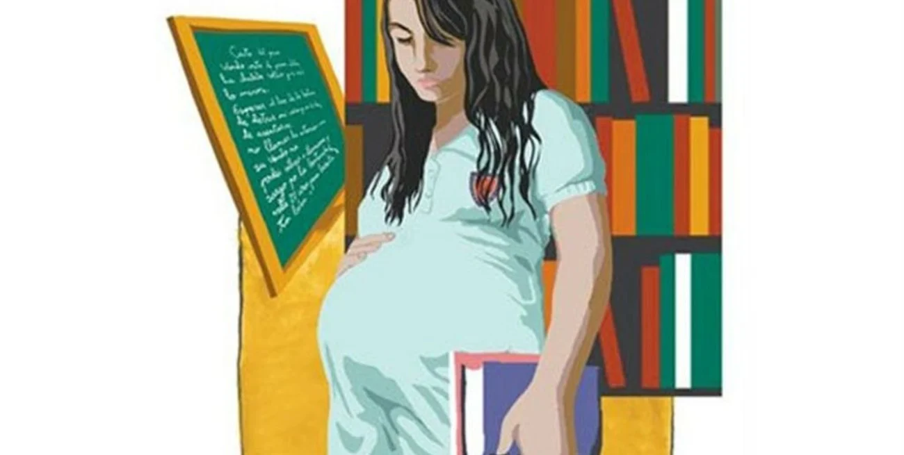
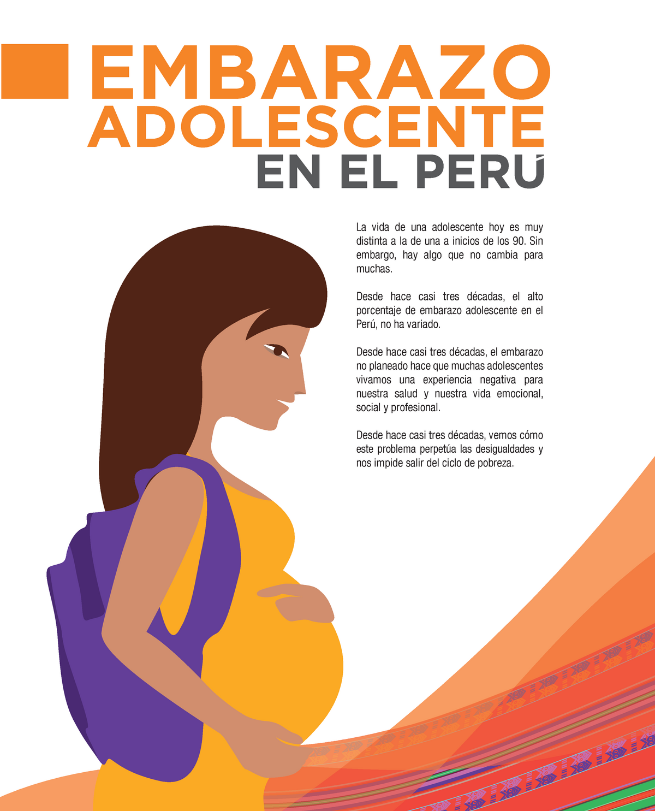

creado por , aranza lopez garduño, stephanie Hernandez Gonzalez,Gael Glez Ramirez
texto
video
imagen
Prevencion del embarazo adolecente
El embarazo en las y los adolescentes afecta negativamente la salud, la permanencia en la escuela, los ingresos presentes y futuros, el acceso a oportunidades recreativas, sociales y laborales especializadas y de calidad y el desarrollo humano. Además del embarazo, tener relaciones sexuales sin protección
implica un riesgo permanente de adquirir una infección de transmisión sexual..
La importancia de “Familias y Sexualidades. Prevención del Embarazo en Adolescentes” radica en que hay muy pocos materiales
accesibles y adecuados sobre sexualidad desde una perspectiva científica, de género y de derechos humanos, diseñados especialmente para madres,
padres, docentes y personas adultas responsables de la educación de niñas, niños y adolescentes
Qué es la ENAPEA?
El embarazo en adolescentes se ha convertido en un problema poblacional que amplía las brechas sociales y de género;
se trata de un tema de proyecto de vida, de educación, de salud, pero, sobre todo, de respeto a sus derechos humanos, a su libertad y a su
desarrollo como personas.
Por ello, prevenir su ocurrencia y
erradicar el embarazo infantil, son objetivos estratégicos del Gobierno de México que demandan acciones integrales
Existen diversas causas que contribuyen al embarazo en la adolescencia. En primer lugar, están las presiones sociales y culturales
que fomentan la sexualidad temprana y el inicio de relaciones sexuales sin responsabilidad ni protección adecuada.
Otra causa crucial son las desigualdades de género y la violencia sexual, que pueden llevar a las niñas y adolescentes a tener
relaciones sexuales en contra de su voluntad
De acuerdo con las estadísticas proporcionadas, se puede observar que el embarazo en la adolescencia sigue siendo un problema grave en México, afectando principalmente a los estados de Chiapas, Guerrero, Coahuila y Sonora. En estos estados, más de la tercera parte de los municipios tienen tasas de embarazo adolescente por encima del 75%.
Esto indica una falta de acceso a la educación sexual y reproductiva, así como a métodos anticonceptivos adecuados.
Una problemática asociada al bienestar del hogar
El embarazo adolescente en México se asocia principalmente con la condición de pobreza del hogar y con la presencia o ausencia de sus padres,
en línea con la evidencia en América Latina. Utilizando el censo 2020, se estima los determinantes del embarazo adolescente según las
características individuales.
A primera vista, nuestro análisis encuentra que una joven que vive en zona rural o que es indígena tiene una mayor probabilidad
de ser madre adolescente. Sin embargo, cuando se consideran otros factores de bienestar del hogar (como condiciones de la vivienda o
posesión de activos), la etnia y la ruralidad dejan de ser factores de riesgo. Estos resultados sugieren que el embarazo adolescente está más
asociado al bienestar del hogar y no al ser indígena o a habitar en la zona rural.

imagen
La evidencia nacional e internacional es clara con respecto a los impactos negativos del embarazo adolescente en el desarrollo de capacidades .
Diversos estudios han encontrado una asociación significativa entre la maternidad temprana con menores logros educativos y peores resultados en
el mercado laboral para las mujeres. Esta asociación implica que una madre
adolescente verá afectadas sus oportunidades no solo en el corto sino en el largo plazo, reforzando brechas de género.
equipo